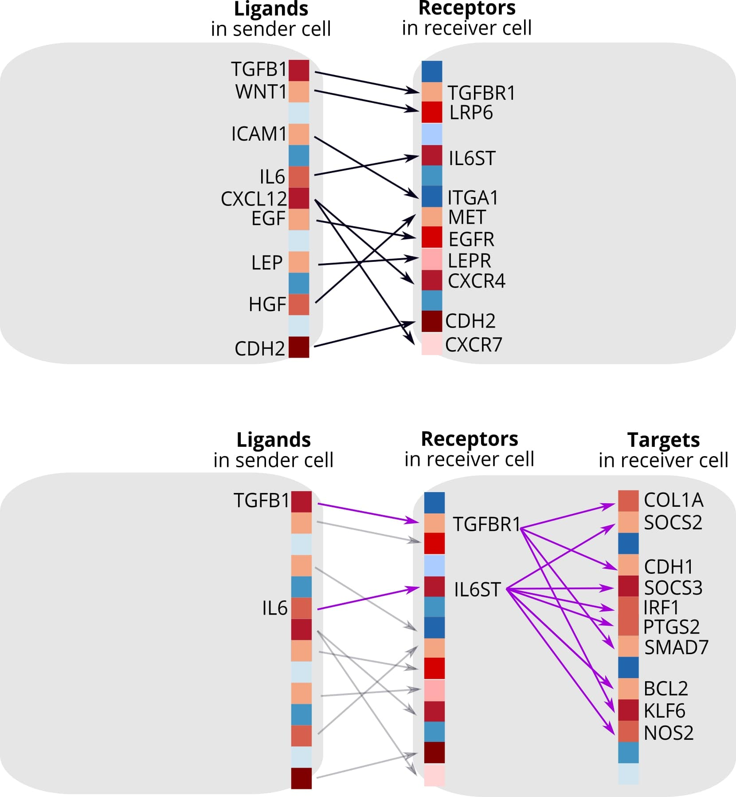

NicheNet Algorithm Overview
Zaoqu Liu, Robin Browaeys, Wouter Saelens, Yvan Saeys
2026-01-24
Source:vignettes/algorithm_overview.Rmd
algorithm_overview.RmdIntroduction
NicheNet is a computational method for modeling intercellular communication by linking extracellular ligands to intracellular gene regulatory changes. This vignette provides a comprehensive overview of the NicheNet algorithm, its underlying principles, and how it differs from conventional cell-cell communication inference approaches.
The Challenge of Cell-Cell Communication Analysis
Traditional approaches to study cell-cell communication (CCC) focus primarily on identifying ligand-receptor interactions based on gene expression:
- Expression-based methods: Identify co-expressed ligand-receptor pairs between cell types
- Database-driven methods: Match expressed genes to curated ligand-receptor databases
- Statistical methods: Score interactions based on expression levels and specificity
Limitation: These methods cannot predict the downstream functional effects of ligand-receptor signaling.
NicheNet’s Innovation
NicheNet addresses this limitation by:
- Integrating prior knowledge of signaling pathways and gene regulation
- Predicting target genes affected by each ligand
- Ranking ligands by their ability to explain observed transcriptional changes

Conceptual comparison of NicheNet with traditional approaches
Algorithm Architecture
Three-Layer Prior Model
NicheNet’s prior knowledge model integrates three biological layers:
Layer 1: Ligand-Receptor Interactions
Curated from multiple databases including:
- OmniPath - Comprehensive signaling database
- KEGG - Pathway-based interactions
- Reactome - Reaction-based annotations
- Guide to PHARMACOLOGY - Drug-target data
Ligand-Target Score Computation
Personalized PageRank (PPR)
NicheNet uses Personalized PageRank to compute ligand-target regulatory potential scores.
Ligand Activity Prediction
Problem Formulation
Given: - Gene set of interest : Differentially expressed genes in receiver cells - Background genes : All expressed genes - Ligand-target matrix : Pre-computed regulatory potential scores
Goal: Rank ligands by their ability to predict from .
Workflow Summary
The workflow diagram illustrates the complete NicheNet analysis pipeline from input data to final predictions.
Step-by-Step Process
- Define sender and receiver cells from expression data
- Identify expressed ligands in sender cells
- Identify expressed receptors in receiver cells
- Define gene set of interest (e.g., DE genes in receivers)
- Compute ligand activities using prior model
- Rank ligands by predictive performance
- Infer target genes for top ligands
- Visualize ligand-target relationships
Performance Characteristics
Best Practices
References
Browaeys R, Saelens W, Saeys Y. NicheNet: modeling intercellular communication by linking ligands to target genes. Nature Methods 17, 159–162 (2020).
Page L, Brin S, Motwani R, Winograd T. The PageRank citation ranking: Bringing order to the web. Stanford InfoLab (1999).
Türei D, Korcsmáros T, Saez-Rodriguez J. OmniPath: guidelines and gateway for literature-curated signaling pathway resources. Nature Methods 13, 966–967 (2016).
Session Info
## R version 4.4.0 (2024-04-24)
## Platform: aarch64-apple-darwin20
## Running under: macOS 15.6.1
##
## Matrix products: default
## BLAS: /Library/Frameworks/R.framework/Versions/4.4-arm64/Resources/lib/libRblas.0.dylib
## LAPACK: /Library/Frameworks/R.framework/Versions/4.4-arm64/Resources/lib/libRlapack.dylib; LAPACK version 3.12.0
##
## locale:
## [1] C
##
## time zone: Asia/Shanghai
## tzcode source: internal
##
## attached base packages:
## [1] stats graphics grDevices utils datasets methods base
##
## other attached packages:
## [1] dplyr_1.1.4 ggplot2_4.0.1
##
## loaded via a namespace (and not attached):
## [1] gtable_0.3.6 jsonlite_2.0.0 compiler_4.4.0 tidyselect_1.2.1
## [5] dichromat_2.0-0.1 tidyr_1.3.2 jquerylib_0.1.4 systemfonts_1.3.1
## [9] scales_1.4.0 textshaping_1.0.4 png_0.1-8 yaml_2.3.12
## [13] fastmap_1.2.0 R6_2.6.1 labeling_0.4.3 generics_0.1.4
## [17] knitr_1.51 htmlwidgets_1.6.4 tibble_3.3.1 desc_1.4.3
## [21] bslib_0.9.0 pillar_1.11.1 RColorBrewer_1.1-3 rlang_1.1.7
## [25] cachem_1.1.0 xfun_0.56 fs_1.6.6 sass_0.4.10
## [29] S7_0.2.1 otel_0.2.0 cli_3.6.5 withr_3.0.2
## [33] pkgdown_2.1.3 magrittr_2.0.4 digest_0.6.39 grid_4.4.0
## [37] lifecycle_1.0.5 vctrs_0.7.0 evaluate_1.0.5 glue_1.8.0
## [41] farver_2.1.2 ragg_1.5.0 purrr_1.2.1 rmarkdown_2.30
## [45] jpeg_0.1-11 tools_4.4.0 pkgconfig_2.0.3 htmltools_0.5.9